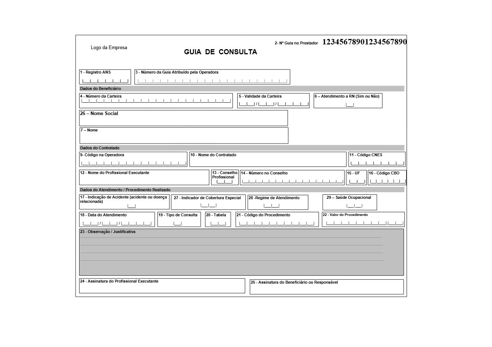
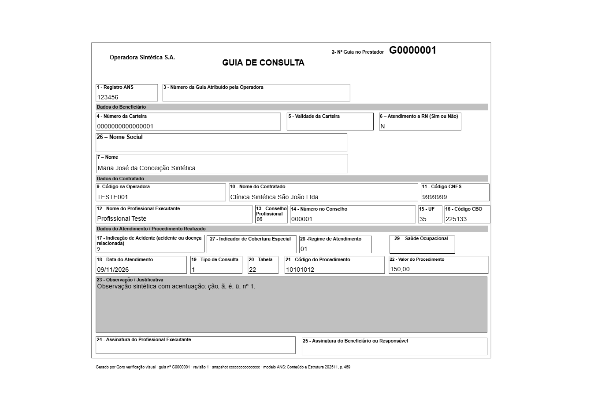
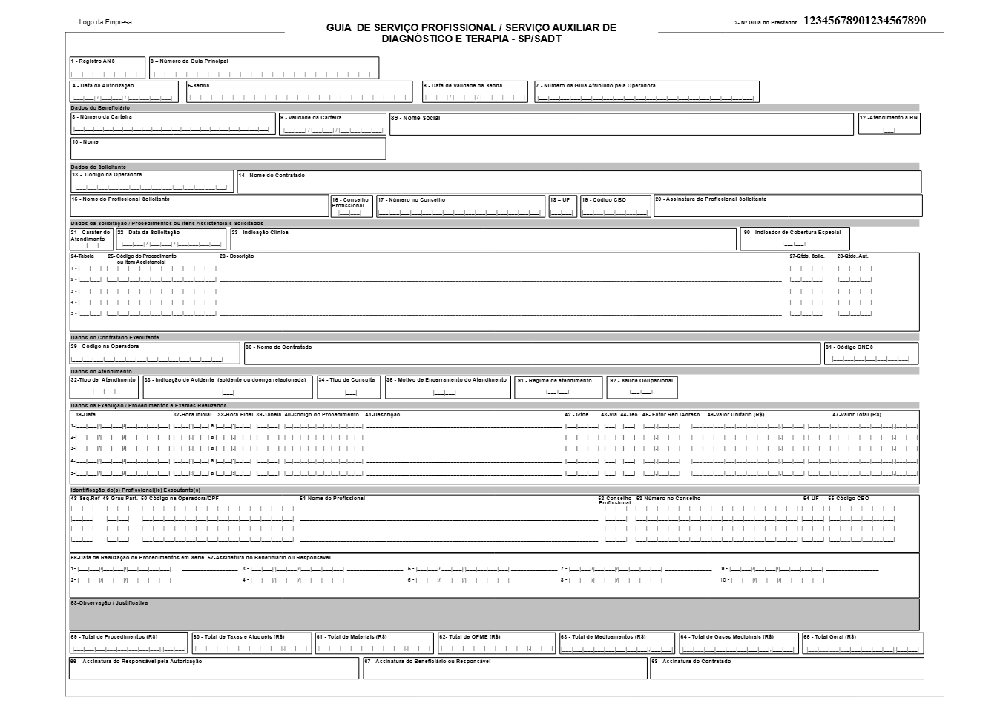
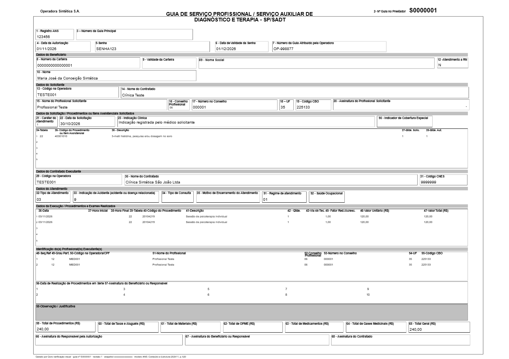
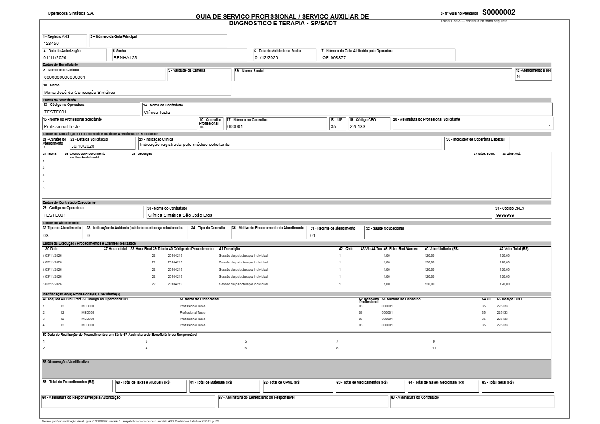
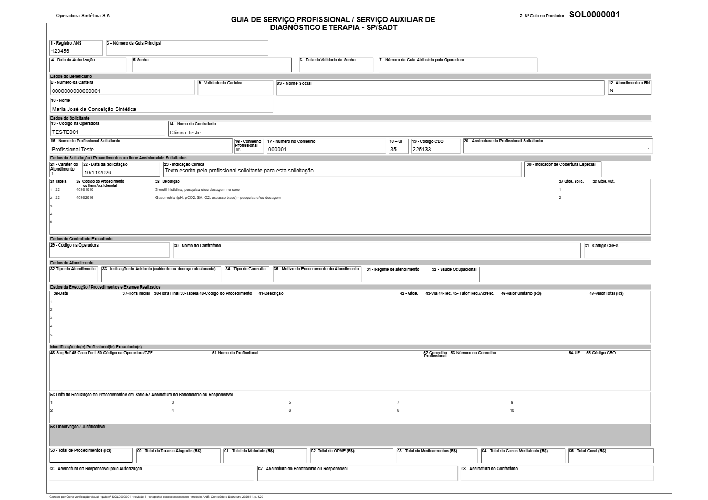
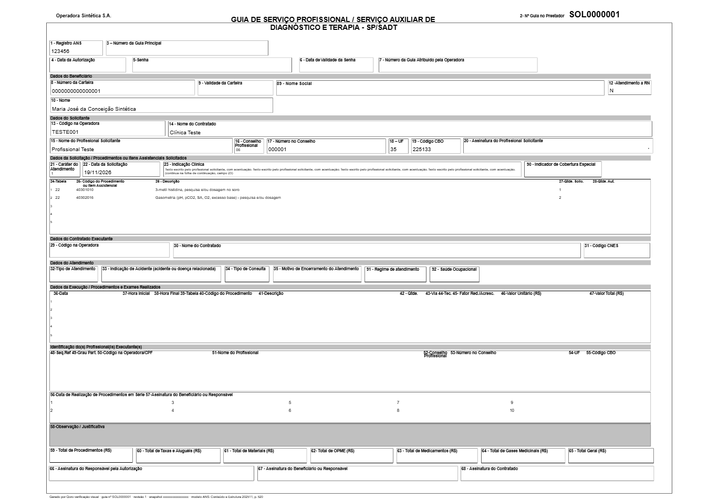
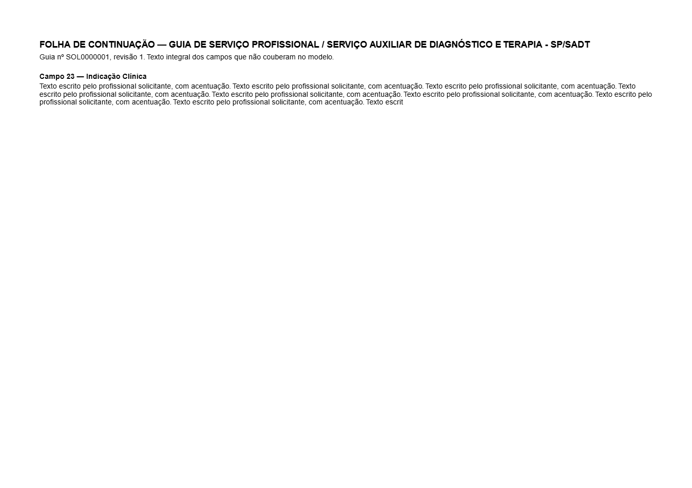

Dados 100% sintéticos. Medidas em report.json.
| Modelo oficial (ANS) | Gerado pelo Qoro | |
|---|---|---|
| consulta folha 1 |  |  |
| sadt-cobranca folha 1 |  |  |
| sadt-cobranca-12-itens folha 1 |  | |
| sadt-cobranca-12-itens folha 2 | ||
| sadt-cobranca-12-itens folha 3 | ||
| sadt-solicitacao folha 1 |  | |
| sadt-solicitacao-indicacao-500 folha 1 |  | |
| sadt-solicitacao-indicacao-500 folha 2 |  |